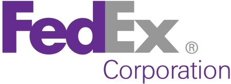
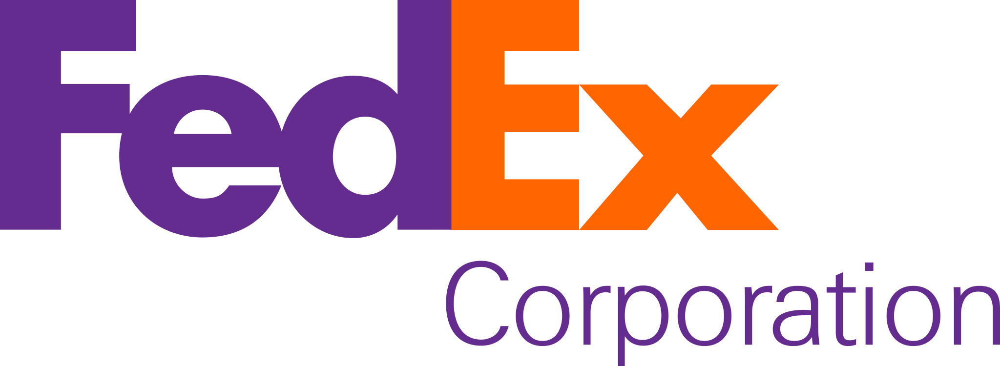

홈 > 브랜드 매거진 > 페덱스
페덱스
페덱스(FedEx)는 미국 멤피스에 본사를 둔 글로벌 특송·물류 기업이다.
산업 분야 브랜드·비즈니스 · 공개 등급 편집 검수 · 브랜드 평가 4.7 ★


한눈에 보는 브랜드
페덱스(FedEx)는 프레더릭 스미스(Frederick W. Smith)가 1971년 6월 미국 테네시주 멤피스에서 세운 특송 물류 기업이다.
1973년 4월 14대의 소형 제트기로 25개 도시에 첫 배송을 시작했고, 1976년 흑자 전환, 1978년 상장, 1984년 국제 서비스 진출을 거치며 성장했다. 현재 연매출 약 880억 달러, 직원 50만 명 이상, 220개 이상의 국가·지역을 잇는 세계 최대급 특송 사업자로 자리 잡았다.
브랜드 관점
페덱스의 핵심 경쟁력은 항공 특송과 익일배송이다. 모든 화물을 멤피스 중앙 허브로 모아 재분류해 다시 내보내는 허브앤스포크(hub-and-spoke) 방식을 항공망에 본격 적용한 선구자로, 자체 항공기 선단을 운용한다는 점에서 지상 네트워크가 강한 UPS, 유럽·국제 노선이 두터운 DHL과 차별화된다.
2024년 12월 발표한 화물(Freight) 부문 분사 결정은 고수익 특송에 집중하려는 신호로, 사업 구조를 단순화하고 자본 효율을 높이려는 전략이다. 한국의 수출 제조사와 이커머스 셀러에게 페덱스의 항공 특송망은 미주·유럽 긴급 납기 대응의 핵심 통로로 활용된다.
시작과 성장
출발점은 프레더릭 스미스가 예일대 재학 시절 경제학 수업에 제출한 보고서였다. 그는 컴퓨터·항공 시대에는 한 도시에 화물을 모아 재분류 후 재배송하는 통합 익일배송망이 필요하다고 주장했다.
1971년 6월 그는 상속 자금과 벤처 투자를 모아 페더럴 익스프레스(Federal Express)를 설립했고, 1973년 4월 17일 멤피스에서 389명의 직원과 14대 항공기로 25개 도시에 186개 화물을 배송하며 운영을 개시했다. 초기 26개월간 약 3천만 달러의 손실을 낼 만큼 어려웠으나 1976년 흑자에 진입했다.
이후 1978년 기업공개, 1984년 국제 노선 확장으로 글로벌 특송 기업으로 도약했고, 1994년 사명을 페덱스로 바꿨다.
브랜드 아이덴티티
페덱스는 속도, 신뢰, 정시 배송을 핵심 가치로 내세운다. 시각 정체성의 상징은 1994년 랜도(Landor)의 디자이너 린든 리더(Lindon Leader)가 만든 워드마크로, 대문자 E와 소문자 x 사이 여백에 앞으로 향하는 화살표를 숨겨 진취성과 정확성을 표현했다.
이 로고는 40개가 넘는 상을 받았다. 색상은 안정감을 주는 보라색과 활력·속도를 상징하는 주황색을 결합했다.
타깃은 긴급 납기가 필요한 기업과 글로벌 무역 사업자이며, 브랜드 보이스는 신속하고 신뢰감 있는 전문가 어조를 유지한다.
제품과 서비스
주요 서비스군은 항공 익일·국제 특송을 담당하는 페덱스 익스프레스(Express), 지상 소포 배송의 페덱스 그라운드(Ground), 중량 화물의 페덱스 프레이트(Freight)로 구성된다. 인쇄·발송을 돕는 페덱스 오피스(Office)와 공급망 서비스도 운영한다.
시그니처는 시간 지정 익일 특송이며, 가격대는 일반 지상 배송부터 시간 보장 프리미엄 특송까지 폭넓다. 채널은 온라인 예약, 영업소, 제휴 매장, 기업 계약 등 다층적이다.
현재 상태
본사는 미국 테네시주 멤피스에 있다. 직원 수는 50만 명 이상, 진출 국가·지역은 220개 이상이며, 연매출은 약 880억 달러 규모다.
2024년 12월 화물 부문 분사 계획을 발표했고, 창립자 프레더릭 스미스는 2025년 80세로 별세했다.
타임라인
BI/CI 변천사

BI/CI 아카이브BI/CI 아카이브함께 읽을 브랜드
 브랜드·비즈니스 · 편집 검수Yahoo
브랜드·비즈니스 · 편집 검수Yahoo야후는 1994년 미국에서 출범한 인터넷 포털·미디어 기업으로, 검색 디렉터리에서 출발해 이메일·뉴스·금융·스포츠 등 폭넓은 온라인 서비스를 운영해 왔다. 1990년...
 브랜드·비즈니스 · 편집 검수Citibank
브랜드·비즈니스 · 편집 검수Citibank씨티(Citi)는 미국 씨티그룹이 운영하는 글로벌 소비자·기업 금융 브랜드로, 1812년 뉴욕에서 출발한 시티뱅크 오브 뉴욕을 뿌리로 한다. 빨강 아치가 워드마크 위...
 브랜드·비즈니스 · 편집 검수Decathlon
브랜드·비즈니스 · 편집 검수Decathlon데카트론은 1976년 프랑스 릴에서 출발한 스포츠용품 대형 소매·제조 기업으로, 다양한 종목의 장비와 의류를 한 매장에 모아 합리적 가격에 제공하는 모델을 구축했다....
NA
NASA
브랜드·비즈니스 · 편집 검수NASA미 항공우주국(NASA)의 '웜(worm)' 로고는 디자이너 리처드 단과 브루스 블랙번이 1975년 디자인한 워드마크로, 붉은색 단일 색으로 'NASA' 네 글자를...
Or
Orchestra Sinfonica Di Milano
브랜드·비즈니스 · 편집 검수Orchestra Sinfonica Di MilanoOrchestra Sinfonica Di Milano는 2022년에 기록된 Designed by Landor 계열의 브랜드 아이덴티티 사례입니다. Landor, La...
Pa
Paws Off!
브랜드·비즈니스 · 편집 검수Paws Off!Paws Off!는 2023년에 기록된 Designed by Seachange 계열의 브랜드 아이덴티티 사례입니다. Seachange가 아이덴티티 작업의 디자이너로...
 브랜드·비즈니스 · 편집 검수Sigma
브랜드·비즈니스 · 편집 검수SigmaSigma는 2025년에 기록된 From Japan 계열의 브랜드 아이덴티티 사례입니다. Stockholm Design Lab가 아이덴티티 작업의 디자이너로 기록되어...
브랜드·비즈니스 · 자료 기반한화솔루션한화솔루션(Hanwha Solutions)은 한화그룹 계열의 석유화학·신재생에너지 기업으로, 2020년 한화케미칼에서 사명을 바꿨다.